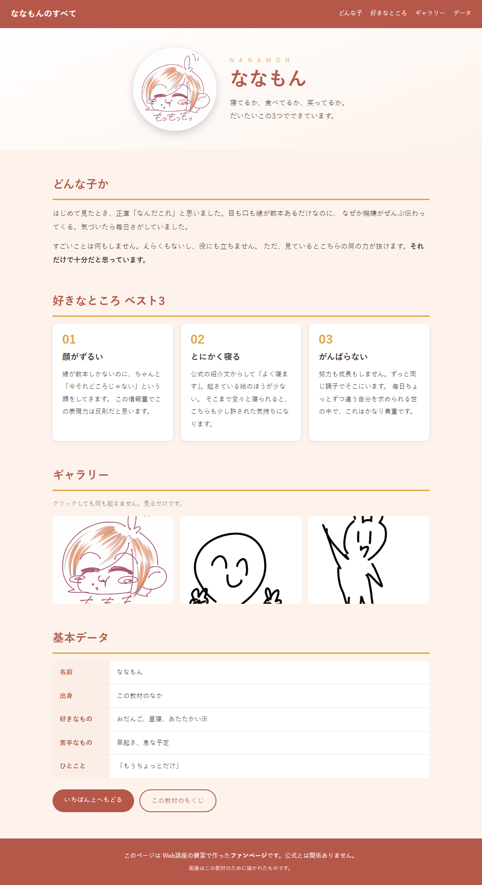
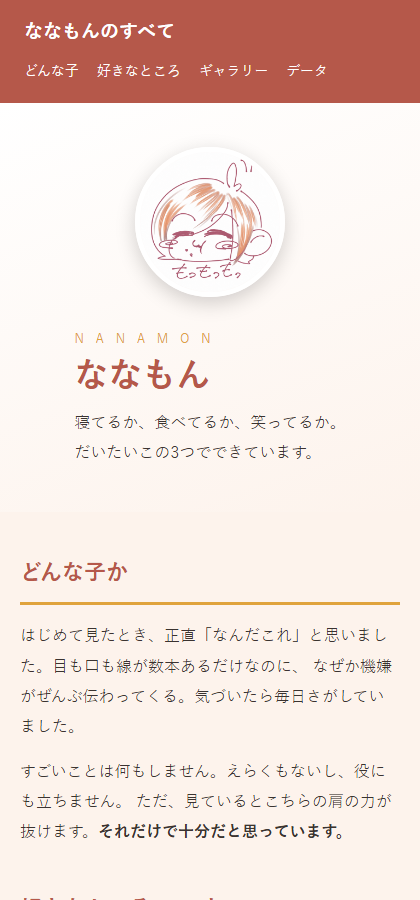

HTML と CSS だけで、1ページのファンサイトを作る。JavaScript は使わない。
習ったことを全部ここで使う。だいたい2〜3時間（授業1回＋宿題）を見ている。
これは見本。同じものを作る必要はない。構成だけ真似して、中身は自分の推しで埋めて。


この課題が終わると、次のことが自分でできるようになる。
これが入っていれば合格。スターターの骨組みを使えば、構成は自動的に満たせる。
| 項目 | 内容 |
|---|---|
| 見出し | h1 はページに1つだけ（推しの名前）。h2 は各セクションに1つずつ |
| 文章 | p で2段落以上。強調したい語は strong で囲む |
| 画像 | img を4枚以上。alt に「何が写っているか」を必ず書く |
| リンク | a でページ内移動（#id）を1つ以上 |
| 表 | table で基本データを5行以上 |
| 区切り | section でまとまりを分け、id を付ける |
| 項目 | 内容 |
|---|---|
| 置き場所 | 別ファイル（style.css）に書く。HTMLの中に書かない |
| 色 | 基本は3色まで。:root の変数にまとめる |
| 横並び | display:flex を2か所以上（ヘッダー・カード・ギャラリー） |
| 中央寄せ | max-width ＋ margin:0 auto で本文の幅を決める |
| 画像 | object-fit:cover で、大きさの違う画像をそろえる |
| 動き | :hover を1か所以上。transition も添える |
| スマホ | 幅400pxまで狭めても、横スクロールが出ない |
いきなり書きはじめないで。①と②で全体の8割が決まる。
img フォルダに入れ、紹介文を先にメモ帳で書ききってしまう。
文章を考えながらHTMLを書くと、どちらも中途半端になる。
flex-wrap: wrap; が抜けていないか確認して。
starter/index.html と starter/style.css に、
★ 付きのコメントが入っている。全部で HTML 13か所・CSS 14か所。
| 印 | やること | ヒント |
|---|---|---|
| ★A | 色を3つ決める | 推しのイメージカラー。濃い・薄い・差し色 |
| ★B | 本文の大きさと行間 | font-size / line-height |
| ★C | 本文の幅を決めて中央に | width / max-width / margin |
| ★D | ヘッダーを左右に分ける | display / justify-content / align-items |
| ★E | リンクの下線を消す | text-decoration |
| ★F | 主役の画像をまるく | object-fit / border-radius |
| ★G | 英字をロゴっぽく | letter-spacing |
| ★H | カードを横に並べる | display / gap / flex-wrap |
| ★I | カードを紙っぽく | border-radius / padding / box-shadow |
| ★J | カードを浮かせる | transform: translateY(-5px) |
| ★K | ギャラリーの高さをそろえる | object-fit |
| ★L | ボタンをカプセル形に | border-radius: 999px |
| ★M | ボタンの hover 色 | background |
| ★N | スマホ用の調整 | 大きい文字・画像を小さく |
HTML の ★1〜★13 は、 タイトル・名前・紹介文など中身を入れるだけ。順番に埋めて。
| やりたいこと | どうするか |
|---|---|
| 手元で練習する | 拾ってきた画像でも大丈夫。公開しなければよい |
| 人に見せたい | USBやファイル送信でファイルごと渡す。これは公開ではない |
| ネットに公開したい | 自分で撮った／描いた画像、公式が配布している素材、 フリー素材サイトのものに差し替えてから |
あわせて、フッターに 「これはファンページ。公式とは関係ありません」 と書いておく。 スターターの ★13 がその場所。ファンサイトの作法として、これは書く側の常識になっている。
必須要件が終わって、まだ時間があるとき用。やらなくても構わない。
article をコピーするだけ）:hover で少し拡大する動きをつけるgallery.html など）を作って、ヘッダーのメニューからつなぐbackground-image で、主役のところに背景写真を敷くtitle）img に alt が書いてあるstyle.css に分かれているindex.html・style.css・img フォルダが
同じ階層に入っていることを確認して。
画像だけ別の場所に置いていると、渡した先で表示されない。